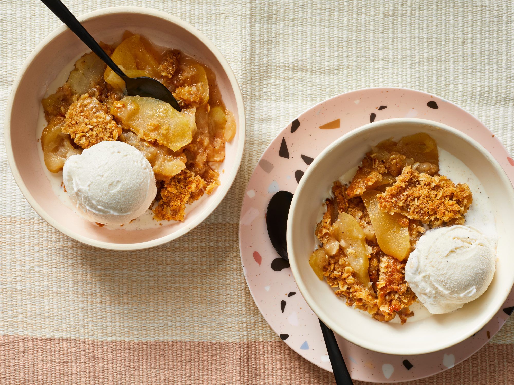

Crockpot Apple Crisp With Oats

Our Crockpot Apple Crisp With Oatmeal is a perfect marriage of tender, juicy apples and a sweet and salty crisp. The edges caramelize and set really
nicely, while the center finishes crisping right at the end. It's got that traditional flavor everyone loves, and best of all, it's super easy.
- Combine oats, brown sugar, cinnamon, 1 cup of the flour, and 1/2 teaspoon of the salt in a medium bowl.
- Using a pastry blender or your fingers, cut butter into flour mixture until mixture resembles small peas.
- Combine apples, granulated sugar, lemon juice, cinnamon, and remaining 2 tablespoons flour and 1/4 teaspoon salt in a large bowl.
- Transfer apple mixture to a lightly greased (with cooking spray) 6-quart slow cooker.
- Evenly distribute oats mixture over apple mixture.
- Place paper towels over top of slow cooker extending over rim; then cover with lid.
- Cook on HIGH until apples are tender and oats mixture is caramelized around edges and crispy, 2 to 2 1/2 hours.